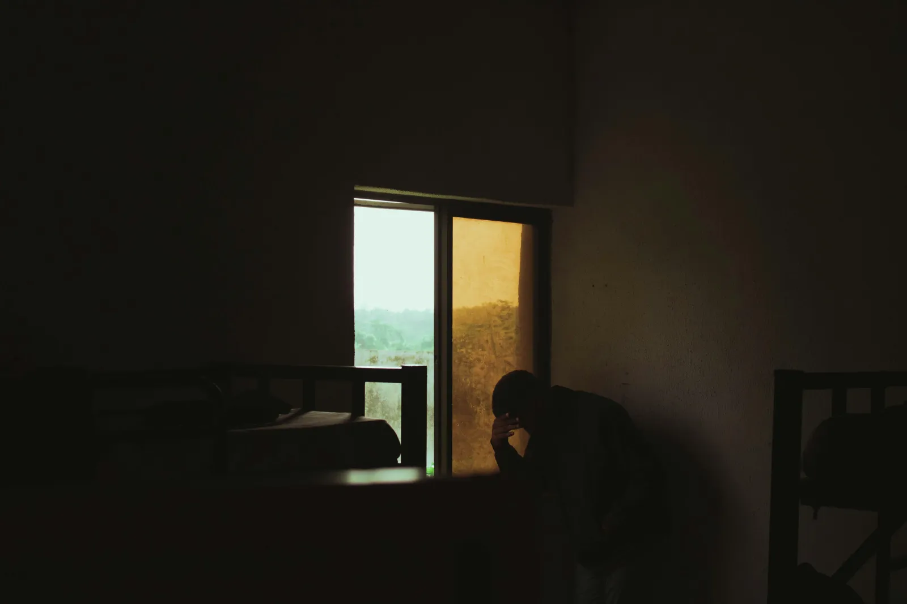
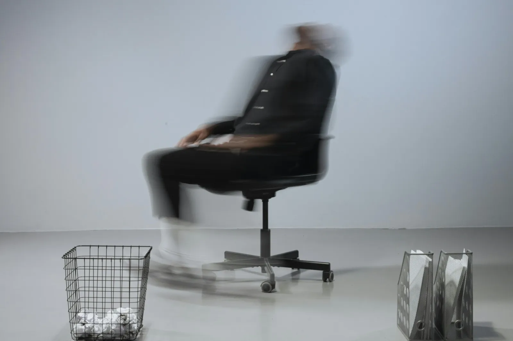
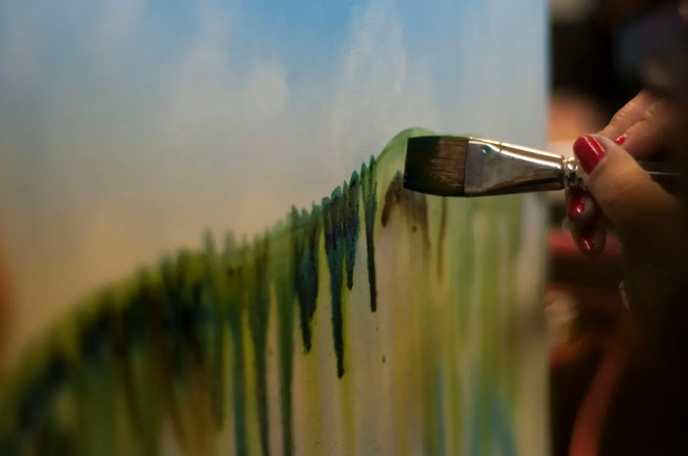

דיכאון, חרדה וערך עצמי
מפיזור ענני הדיכאון והחרדה אל שקט פנימי, ויסות רגשי וערך עצמי שנובע מבפנים
ערך עצמי - הנקודה שממנה הכל מתחיל
עבור רבים מאיתנו, תחושת הערך העצמי נעה בין רגעים של ביטחון לספקות עצמיים והשוואה לאחרים. לעיתים נדמה שהיא תלויה במה שקורה בחוץ: הישגים, מערכות יחסים, או האופן שבו אחרים רואים אותנו. כשדברים מסתדרים אנחנו מרגישים ״שווים״; אך כשהם מתערערים התחושה הפנימית שלנו מתערערת יחד איתם. עם זאת, ערך עצמי אינו רק תוצאה של נסיבות חיצוניות, אלא מערכת יחסים פנימית עם עצמנו - האופן שבו אנו מדברים אל עצמנו ומתייחסים לעצמנו גם ברגעי קושי.
בטיפול, אנו יוצרים מרחב להתבוננות בסוגיות של ערך עצמי בעדינות וללא שיפוטיות. בעזרת פסיכותרפיה דינמית אנו לומדים לזהות את הקולות הביקורתיים ולפרום את הנחות היסוד שמזינות אותם, ובמקומם לפתח בהדרגה קול פנימי יציב ומיטיב. כך מתאפשר מעבר מהישענות על אישור חיצוני, אל עבר תחושת ערך שמבוססת מבפנים- כזו שמאפשרת לנו לנוע בעולם בביטחון, בחופש ובחיבור עמוק לעצמנו.

דיכאון: כשהעולם נהיה כבד מדי
לכולנו יש רגעים של ״אין לי כוח לכלום״. זו יכולה להיות עצבות שקטה, ריקנות, או עייפות כבדה שגם שינה טובה לא מצליחה להפיג. לעיתים, הביטוי ״אני בדיכאון״ נזרק לחלל האוויר כלאחר יד, אך עבור רבים מאיתנו זוהי חוויה פנימית המבקשת מקום ותשומת לב. דיכאון הוא מעבר לתחושת דכדוך חולפת; זוהי עננה שמלווה את היומיום במצב רוח ירוד או אובדן הנאה ועניין מתמשכים, וגורמת למצוקה משמעותית או פגיעה בתפקוד. לעיתים מתלווה לכך קול פנימי נוקשה של בושה, אשמה וביקורת עצמית. זהו אחד המלכודים הכואבים של הדיכאון: לא רק שאין לנו כוח לפעול, אנחנו גם מענישים את עצמנו על כך.
הדיכאון יכול להופיע ללא סיבה נראית לעין או בתגובה לאירועי חיים משמעותיים. הוא יכול להופיע כאבל שקפא בתגובה לאובדן ושכול, מחלה, פרידה וגירושין, עת שהנפש נסוגה פנימה כי העולם בחוץ הפך למכאיב מדי או חסר משמעות ללא מה שאבד. לעיתים הוא מופיע סביב יחסים או היעדרם - כמו בדידות או משבר בזוגיות, ובמקרים אחרים הוא מתעורר לנוכח שחיקה בעבודה או פיטורין. הדיכאון עשוי גם לשמש כמנגנון ״כיבוי״ של מערכת עצבים מוצפת בתגובה לטראומה או עומס ולחץ כרוניים.
באופן מפתיע, דיכאון עלול להופיע דווקא בצמתים של צמיחה כמו חתונה, לידה או הצלחה מקצועית, וכן בתהליכי בניית זהות ועצמאות, כמו יציאה מבית ההורים או התחלה של מסגרת חדשה. במצבים אלו נוצר פער בין הציפייה לאושר לבין תחושת ריקנות. לפעמים הוא נותר מתחת לפני השטח, כדיכאון סמוי - אנחנו ממשיכים לתפקד כרגיל, בעוד שמבפנים כל פעולה דורשת מאמץ תחזוקה אדיר.
מהקשבה לכאב אל תנועה של חיות
מה שאינו מקבל ביטוי בנפש, עובר לא פעם לגוף. הדיכאון אינו רק עצבות פסיבית; הוא יכול להופיע כאי-שקט, עצבנות, קשיי ריכוז, או להתבטא בפגיעה בתיאבון ובשינה ואף בכאבים פיזיים חסרי פשר רפואי. לעיתים ננסה להקהות את הכאב באמצעים חיצוניים כמו אכילה רגשית, וורקהוליזם, שימוש בחומרים או גלילה אינסופית בטלפון. זהו מצב של ״ניתוק חי״ - חיים שנראים שלמים כלפי חוץ, אך מבפנים דורשים כוח רב רק כדי "להחזיק מעמד".
בטיפול, אנו יוצרים מרחב נעים ובטוח שבו ניתן להקשיב לדיכאון אחרת - לא כ״תקלה״ שיש לתקן, אלא כאיתות של הנפש על כך שמשהו זקוק לעיבוד. מתוך הבנה שדווקא תחושות חוסר האונים והייאוש הן אלו שמקשות על הפנייה לטיפול, אנו עובדים בקצב שמותאם לך. דרך טיפול רגשי בשיטת האקומי אנו מתחקים אחר המקורות הלא מודעים של הכאב ולומדים לזהות את הדינמיקה ששומרת על המערכת ״כבויה״. כשאנו נותנים מקום למה ש״קפא״, אנו מקלים על התחושות הקשות ומאפשרים לתנועה של חיות ומשמעות יכולה לנבוע מחדש.
חרדה וסטרס: כשהמחשבות לא נותנות מנוחה
לחרדה יש תפקיד הישרדותי חשוב – היא הרדאר הפנימי שלנו, שעוזר לנו לנטר איומים פוטנציאליים ולהתכונן לקראתם. במינון מתון, חרדה היא חיונית ותפקודית; היא זו שדוחפת אותנו להתכונן לראיון עבודה, ללמוד למבחן או להיזהר בכביש. השאלה אינה האם קיימת חרדה, אלא מהי מידת החרדה. הקושי מתחיל כאשר החרדה מאבדת את המידתיות והופכת מופרזת, מתמשכת או כזו שמופיעה ללא איום ממשי. במצבים אלו, במקום שומר סף יעיל, החרדה הופכת ל״אזעקת שווא״ שמותירה את הגוף והנפש בדריכות כרונית ומתישה.
לרוב, המפגש עם החרדה אינו מתחיל במחשבה, אלא דווקא בגוף: דופק מואץ, רעד, קוצר נשימה, או מתח שרירי. בשל עוצמת התסמינים, רבים חשים שמקור הבעיה הוא גופני ופונים שוב ושוב לבדיקות, רק כדי לגלות שהגוף בריא - אך המערכת הרגשית מוצפת. תחושות אלו מלוות במחשבות טורדניות המייצרות מעגל סגור שבו הגוף והמחשבה מזינים זה את זה.
מוויסות המערכת ועד לשקט פנימי
החרדה מופיעה בכמה מישורים במקביל: במישור הרגשי כאי-שקט, סטרס ומתח מתמשך; במישור הגופני ככאבי שרירים, בטן או ראש, קשיי שינה ועייפות כרונית; ובמישור ההתנהגותי כהימנעות או היערכות-יתר לאירועים שליליים. כל אלו הם דרכים של המערכת לסמן לנו שמשהו בתוכנו מרגיש חשוף מדי, לא מוגן, או זקוק להקשבה שתשיב לנו את תחושת הביטחון.
בטיפול, אנו לומדים לפגוש את החרדה לא כאויב שיש להילחם בו, אלא כמערכת שזקוקה לוויסות והרגעה. בעזרת מיינדפולנס, אנו מתרגלים את היכולת להישאר נוכחים ברגע, מבלי להיסחף אחר המחשבות הטורדניות. דרך התבוננות בתחושות הגוף ובזרם המחשבות ללא שיפוטיות, מתאפשרת קטיעה של המעגל שבו המחשבות מזינות את החרדה. יחד, אנו מרחיבים את היכולת להכיל את חוסר הוודאות, מחזירים לשומר הפנימי את תחושת המוגנות ומאפשרים למערכת העצבים לשוב למצב של איזון.
הצורות השונות של חרדה
חרדה אינה חוויה אחידה, אלא קשת רחבה של ביטויים. היא יכולה להופיע כפחד משתק ממצבים חברתיים או מאובייקט מסוים; כגלים סוערים של התקפי חרדה המלווים בפחד מההתקף הבא; או כתחושה מתמשכת ועמומה של דאגה ומחשבות טורדניות, ללא מען ברור. קיימים ארבעה סוגי חרדה עיקריים:
חרדה חברתית, חרדת
ביצוע ופחד במה
חרדה זו מתעוררת במצבים חברתיים או במצבים שבהם אנו חשים תחת ״זכוכית מגדלת״. היא מלווה בפחד משיפוטיות, מבוכה, השפלה או ביקורת. תחת מטרייה זו נכללים גם חרדת הביצוע - אותו מתח שעולה כשאנו נדרשים להוכיח את ערכנו בעבודה, בלימודים או בסיטואציות אינטימיות, וכן פחד במה המתבטא בקושי בדיבור בפני קהל. חרדה חברתית מובילה פעמים רבות בפגיעה בתפקוד הבינאישי והתעסוקתי, מאחר שהיא מגבילה את היכולת להתבטא ולהפגין כישורים באופן מלא וממצה. כדי להגן על עצמנו מפני הכאב, מתפתח לרוב דפוס של הימנעות: ויתור על קשרים, הזדמנויות או קידום מקצועי, וצמצום החיים לסיטואציות מוכרות בלבד. במקרים אלו, החרדה לרוב יושבת על פצעים של ערך עצמי ותחושת ביטחון. הטיפול מאפשר לבנות מחדש עוגן פנימי שאינו תלוי באישור חיצוני, ולהחזיר לעצמך את החופש לפעול בעולם מבלי להצטמצם.
התקפי חרדה
הרגע שבו חוסר המידתיות מגיע לשיאו ומנגנון החירום מופעל בעוצמה ללא סכנה ממשית. זהו גל פתאומי של פחד עז, המלווה בתסמינים גופניים כמו דפיקות לב חזקות, קוצר נשימה, סחרחורת או תחושת ניתוק. בטיפול מתאפשרת התבוננות מעמיקה המאפשרת לזהות גורמי לחץ ומתח משמעותיים שהביאו להופעתם של התקפים אלו. כך אנו לומדים לזהות את הסימנים המקדימים להתקף, להבין את המנגנון שמפעיל אותו, ולפתח כלים לוויסות והרגעה המשיבים למערכת את תחושת הביטחון.
חרדה ספציפית
פחד מאובייקט או סיטואציה מסוימים: בעלי חיים, מקומות סגורים, בחינות, מעליות, טיסות וכן הלאה. במפגש עם האובייקט או הסיטואציה מתעוררת מצוקה משמעותית המובילה להימנעות, שעלולה לצמצם את מרחב המחיה והחופש שלנו. דרך עבודה טיפולית ניתן לבחון את מקור הפחד ולהרחיב את המרחב הפנימי והחיצוני מול מה שנתפס כמאיים.
חרדה מוכללת
דאגנות כרונית ובלתי פוסקת בנושאים יומיומיים כמו בריאות, פרנסה ומשפחה. זהו מתח מתמשך של דריכות שגורם לעייפות כרונית, קשיי ריכוז ואי-שקט. מעין חרדה שמזדחלת לכל פינה והופכת את היומיום לניסיון מתיש לשלוט במה שבלתי ניתן לשליטה. בטיפול אנו לומדים לזהות את הצורך בשליטה, ולמצוא דרכים חדשות להכיל את חוסר הוודאות מבלי להישאב למעגל הדאגה.

ויסות רגשי והתמודדות עם כעסים: למצוא את השקט בתוך הסערה
החיים מפגישים אותנו עם קשת רחבה של רגשות. עבור רבים מאיתנו המפגש הרגשי עלול להרגיש כמו גל שמאיים להטביע: אנחנו מוצפים, מאבדים שליטה, או לחילופין נאלצים להדחיק ולהתנתק רגשית. ויסות רגשי הוא היכולת שלנו לשהות עם הרגשות מבלי להיבהל מהם ומבלי להיבלע בתוכם. זהו התהליך שבו אנו לומדים להרחיב את הסיבולת הרגשית שלנו, כדי שנוכל להכיל עוצמות רגשיות מבלי שהמערכת שלנו תקרוס או תקפא.
בטיפול, אנחנו לא "משתיקים" את הרגשות, אלא בונים יחד את הכלים לחוות אותם כך שיוכלו לחלוף בטבעיות. בעזרת כלים של מיינדפולנס, אנו לומדים לזהות את הסימנים המוקדמים של ההצפה ולמצוא דרכים לקרקע את עצמנו בזמן אמת. הוויסות מאפשר לנו לעבור ממצב של "טייס אוטומטי" ותגובתיות מתפרצת למצב של בחירה מודעת. מתוך כך, אנו משיבים לעצמנו את תחושת השליטה והביטחון בקשר שלנו עם עצמנו ועם הסובבים אותנו. בדרך זו, הרגש הופך ממקור של סבל לנביעה של חווית חיים מלאה ומחוברת.

להחזיר את הצבע לחיים
דיכאון, חרדה וקשיים בוויסות רגשי אינם תופעות נפרדות, אלא דרכים שונות שבהן הנפש מושיטה יד לעזרה ומבקשת איזון. לעיתים הם מופיעים ככובד ושקיעה פנימה, לעיתים כדריכות מתמשכת וחוסר שקט, ולעיתים כקושי לשאת את עוצמות הרגש. מתחת לכל אלו, נמצא לרוב קשר פנימי שהתרופף - הקשר שלנו עם עצמנו ועם תחושת הערך שלנו.
כאשר תחושת הערך נשענת בעיקר על מה שקורה בחוץ, אנו נעשים רגישים יותר לטלטלות החיים. רגעים של קושי אינם נחווים רק כאתגר, אלא כערעור של תחושת העצמי. הטיפול מציע מרחב שבו ניתן לפגוש את עצמך אחרת - לא דרך ביקורת או תיקון, אלא דרך חקירה, נוכחות וחיבור פנימי. התהליך הטיפולי מאפשר מעבר הדרגתי מהישענות על החוץ אל ערך עצמי יציב, שאינו תלוי רק בנסיבות, אלא בקשר חי ומתמשך עם עצמך. כך נפתחת אפשרות לחיות לא רק מתוך תגובה למה שקורה, אלא מתוך בחירה – עם יותר חופש, יותר ביטחון ויותר חיבור למה שבאמת נכון לך.
בין הגירוי לתגובה ישנו מרחב,
במרחב הזה בכוחנו לבחור את תגובתנו
— ויקטור פרנקל

לפגוש את עצמך אחרת
טיפול בדיכאון, חרדה ובסוגיות של ערך עצמי מאפשר להפוך את המפגש בקליניקה למרחב של חקירה עדינה של הקשר העמוק ביותר בחייך - הקשר שלך עם עצמך. עבודתי כפסיכותרפיסט מבוססת על הכשרה בתכנית הארבע-שנתית לפסיכותרפיה במכון האקומי, ועל ניסיון קליני במרכז הרפואי 'לב השרון' ובקליניקה פרטית בפרדס חנה.
יחד ניצור מרחב בטוח שבו נוכל להתבונן בדפוסים המעצבים את עולמך הרגשי, לזהות את הדרכים שבהן הגוף והנפש מבקשים הגנה, ולחזק את הערך העצמי מבפנים. השילוב בין התנסות חווייתית לבין הבנה פסיכולוגית מעמיקה מאפשר ליצור חוויות רגשיות חדשות, ומתוך כך להרחיב את הסיבולת הרגשית וליצור איזון ויציבות.
אם את.ה מרגיש.ה שזה הזמן עבורך לצאת ממעגל של חרדה וסטרס, להשיל את כובד הדיכאון או לחזק את העוגן הפנימי מול טלטלות החיים - אשמח ללוות אותך בתהליך.